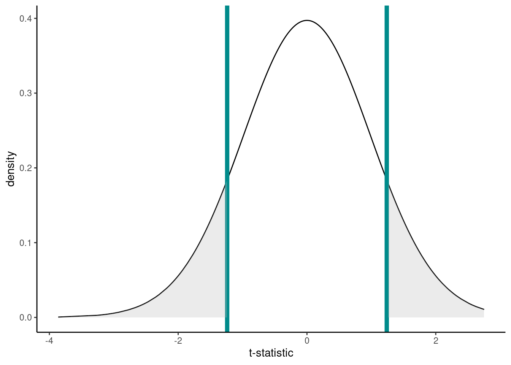

Linear regression
Some mathematical notation
Let’s consider a linear regression with a simple explanatory variable:
\[Y_i = \alpha + \beta_1x_i + \epsilon_i\] where
\[\epsilon_i \sim \text{Normal}(0,\sigma^2).\]
Here for observation \(i\)
- \(Y_i\) is the value of the response
- \(x_i\) is the value of the explanatory variable
- \(\epsilon_i\) is the error term: the difference between \(Y_i\) and its expected value
- \(\alpha\) is the intercept term (a parameter to be estimated), and
- \(\beta_1\) is the slope: coefficient of the explanatory variable (a parameter to be estimated)
Modeling Bill Depth
Remember the penguins from Chapter 2?

Key assumptions
- Independence
- There is a linear relationship between the response and the explanatory variables
- The residuals have constant variance
- The residuals are normally distributed
ggplot(data = penguins_nafree, aes(x = bill_depth_mm)) +
geom_histogram() + theme_classic() +
xlab("Bill depth (mm)")
First off let’s fit a null (intercept only) model. This in old money would be called a one sample t-test.
## Estimate Std. Error t value Pr(>|t|)
## (Intercept) 17.16486 0.1079134 159.0614 1.965076e-315Model formula
This model, from above, is simply \[Y_i = \alpha + \epsilon_i.\]
Here for observation \(i\) \(Y_i\) is the value of the response (bill_depth_mm) and \(\alpha\) is a parameter to be estimated (typically called the intercept).
Inference
The (Intercept) term, 17.1648649, tells us the (estimated) average value of the response (bill_depth_mm), see
## # A tibble: 1 × 1
## average_bill_depth
## <dbl>
## 1 17.2The SEM (Std. Error) = 0.1079134.
The hypothesis being tested is \(H_0:\) ((Intercept) ) \(\text{mean}_{\text{`average_bill_depth`}} = 0\) vs. \(H_1:\) ((Intercept)) \(\text{mean}_{\text{`average_bill_depth`}} \neq 0\)
The t-statistic is given by t value = Estimate / Std. Error = 159.0614207
The p-value is given byPr (>|t|) = 1.965076110^{-315}.
So the probability of observing a t-statistic as least as extreme given under the null hypothesis (average bill depth = 0) given our data is 1.965076110^{-315}, pretty strong evidence against the null hypothesis I’d say!
Single continuous variable
Does bill_length_mm help explain some of the variation in bill_depth_mm?
p1 <- ggplot(data = penguins_nafree, aes(x = bill_length_mm, y = bill_depth_mm)) +
geom_point() + ylab("Bill depth (mm)") +
xlab("Bill length (mm)") + theme_classic()
p1
Model formula
This model is simply \[Y_i = \alpha + \beta_1x_i + \epsilon_i\] where for observation \(i\) \(Y_i\) is the value of the response (bill_depth_mm) and \(x_i\) is the value of the explanatory variable (bill_length_mm); As above \(\alpha\) and \(\beta_1\) are parameters to be estimated. We could also write this model as
\[ \begin{aligned} \operatorname{bill\_depth\_mm} &= \alpha + \beta_{1}(\operatorname{bill\_length\_mm}) + \epsilon \end{aligned} \]
Fitted model
As before we can get out estimated parameters (here \(\alpha\) and \(\beta_1\)) using
## Estimate Std. Error t value Pr(>|t|)
## (Intercept) 20.78664867 0.85417308 24.335406 1.026904e-75
## bill_length_mm -0.08232675 0.01926835 -4.272642 2.528290e-05Here, the (Intercept): Estimate (\(\alpha\) above) gives us the estimated average bill depth (mm) given the estimated relationship bill length (mm) and bill length.
The bill_length_mm : Estimate (\(\beta_1\) above) is the slope associated with bill length (mm). So, here for every 1mm increase in bill length we estimated a 0.082mm decrease (or a -0.082mm increase) in bill depth.
## calculate predicted values
penguins_nafree$pred_vals <- predict(slm)
## plot
ggplot(data = penguins_nafree, aes(x = bill_length_mm, y = bill_depth_mm)) +
geom_point() + ylab("Bill depth (mm)") +
xlab("Bill length (mm)") + theme_classic() +
geom_line(aes(y = pred_vals))
One factor and a continous variable
Adding species; remember species is a factor variable!
p2 <- ggplot(data = penguins_nafree,
aes(y = bill_depth_mm, x = bill_length_mm, color = species)) +
geom_point() + ylab("Bill depth (mm)") +
xlab("Bill length (mm)") + theme_classic()
p2
Model formula
Now we have two explanatory variables, so our model formula becomes
\[Y_i = \beta_0 + \beta_1z_i + \beta_2x_i + \epsilon_i\] \[\epsilon_i \sim \text{Normal}(0,\sigma^2)\]
where for observation \(i\)
- \(Y_i\) is the value of the response (
bill_depth_mm) - \(z_i\) is one explanatory variable (
bill_length_mmsay) - \(x_i\) is another explanatory variable (
speciessay) - \(\epsilon_i\) is the error term: the difference between \(Y_i\) and its expected value
- \(\alpha\), \(\beta_1\), and \(\beta_2\) are all parameters to be estimated.
Remember though that when we have factor explanatory variables (e.g., species) we have to use dummy variables, see lecture. Here the Adelie group are the baseline (R does this alphabetically, to change this see previous chapter).
So model formula is
\[ \begin{aligned} \operatorname{bill\_depth\_mm} &= \alpha + \beta_{1}(\operatorname{bill\_length\_mm}) + \beta_{2}(\operatorname{species}_{\operatorname{Chinstrap}}) + \beta_{3}(\operatorname{species}_{\operatorname{Gentoo}})\ + \\ &\quad \epsilon \end{aligned} \]
Fitted model
## Estimate Std. Error t value Pr(>|t|)
## (Intercept) 10.5652616 0.69092642 15.291442 2.977289e-40
## bill_length_mm 0.2004431 0.01767974 11.337449 2.258955e-25
## speciesChinstrap -1.9330779 0.22571878 -8.564099 4.259893e-16
## speciesGentoo -5.1033153 0.19439523 -26.252267 1.043789e-82Simpson’s paradox… look how the slope associated with bill length (coefficient of bill_length_mm) has switched direction from the model above! Why do you think this is?
Here, the (Intercept): Estimate gives us the estimated average bill depth (mm) of the Adelie penguins given the estimated relationship between bill length and bill depth. Technically, this is the estimated bill depth (mm) for Adelie penguins with zero bill length. That is clearly a nonsense way to interpret this as that would be an impossible situation in practice! I would recommend as thinking of this as the y-shift (i.e., height) of the fitted line.
The bill_length_mm : Estimate (\(\beta_1\) above) is the slope associated with bill length (mm). So, here for every 1mm increase in bill length we estimated a 0.2mm increase in bill depth.
What about the coefficient of the other species levels? Look at the plot below, these values give the shift (up or down) of the parallel lines from the Adelie level. So given the estimated relationship between bill depth and bill length these coefficients are the estimated change from the baseline.
## calculate predicted values
penguins_nafree$pred_vals <- predict(slm_sp)
## plot
ggplot(data = penguins_nafree, aes(y = bill_depth_mm, x = bill_length_mm, color = species)) +
geom_point() + ylab("Bill depth (mm)") +
xlab("Bill length (mm)") + theme_classic() +
geom_line(aes(y = pred_vals))
Interactions
Recall the (additive) model formula from above
\[Y_i = \beta_0 + \beta_1z_i + \beta_2x_i + \epsilon_i\]
but what about interactions between variables? For example,
\[Y_i = \beta_0 + \beta_1z_i + \beta_2x_i + \beta_3z_ix_i + \epsilon_i\]
Note: to include interaction effects in our model by using either the * or : syntax in our model formula. For example,
:denotes the interaction of the variables to its left and right, and*means to include all main effects and interactions, soa*bis the same asa + b + a:b.
To specify a model with additive and interaction effects we use
Model formula
The model formula is then
\[ \begin{aligned} \operatorname{bill\_depth\_mm} &= \alpha + \beta_{1}(\operatorname{bill\_length\_mm}) + \beta_{2}(\operatorname{species}_{\operatorname{Chinstrap}}) + \beta_{3}(\operatorname{species}_{\operatorname{Gentoo}})\ + \\ &\quad \beta_{4}(\operatorname{bill\_length\_mm} \times \operatorname{species}_{\operatorname{Chinstrap}}) + \beta_{5}(\operatorname{bill\_length\_mm} \times \operatorname{species}_{\operatorname{Gentoo}}) + \epsilon \end{aligned} \]
Fitted model
## Estimate Std. Error t value Pr(>|t|)
## (Intercept) 11.48770713 1.15987305 9.9042797 2.135979e-20
## bill_length_mm 0.17668344 0.02980564 5.9278518 7.793199e-09
## speciesChinstrap -3.91856701 2.06730876 -1.8954919 5.890889e-02
## speciesGentoo -6.36675118 1.77989710 -3.5770333 4.000274e-04
## bill_length_mm:speciesChinstrap 0.04552828 0.04594283 0.9909769 3.224296e-01
## bill_length_mm:speciesGentoo 0.03092816 0.04111608 0.7522157 4.524625e-01This can be written out:
\[ \begin{aligned} \operatorname{\widehat{bill\_depth\_mm}} &= 11.49 + 0.18(\operatorname{bill\_length\_mm}) - 3.92(\operatorname{species}_{\operatorname{Chinstrap}}) - 6.37(\operatorname{species}_{\operatorname{Gentoo}})\ + \\ &\quad 0.05(\operatorname{bill\_length\_mm} \times \operatorname{species}_{\operatorname{Chinstrap}}) + 0.03(\operatorname{bill\_length\_mm} \times \operatorname{species}_{\operatorname{Gentoo}}) \end{aligned} \]
The interaction terms (i.e., bill_length_mm:speciesChinstrap and bill_length_mm:speciesGentoo) specify the species specific slopes given the other variables in the model. We can use our dummy variable trick again to interpret the coefficients correctly. In this instance we have one factor explanatory variable, Species, and one continuous explanatory variable, bill length (mm). As before, Adelie is our baseline reference.
Let’s assume we’re talking about the Adelie penguins, then our equation becomes (using the dummy variable technique)
\[\widehat{\text{bill_depth_mm}} = 11.488 + (0.177 \times \text{bill_length_mm}).\]
So, the (Intercept): Estimate term (\(\hat{\alpha}\)), again, specifies the height of the Adelie fitted line and the main effect of bill_length_mm: Estimate (\(\hat{\beta_1}\)) estimates the relationship (slope) between bill length (mm) and bill depth (mm) for the Adelie penguin. So, here for every 1mm increase in bill length (mm) for the Adelie penguins we estimate, on average, a 0.177mm increase in bill depth (mm).
Now, what about Gentoo penguins? Our equation then becomes
\[\widehat{\text{bill_depth_mm}} = 11.488 + (0.177 \times \text{bill_length_mm}) + (-6.367) + (0.031 \times \text{bill_length_mm}).\]
which simplifies to
\[\widehat{\text{bill_depth_mm}} = 5.121 + (0.208 \times \text{bill_length_mm}).\]
The estimated Gentoo-specific intercept term (y-axis line height) is therefore \(\hat{\alpha} + \hat{\beta_3} = 11.488 + (-6.367) = 5.121.\) The Gentoo-specific bill length (mm) slope is then \(\hat{\beta_1} + \hat{\beta_5} = 0.177 + 0.031 = 0.208.\) So, for every 1mm increase in bill length (mm) for the Gentoo penguins we estimate, on average, a 0.208mm increase in bill depth (mm), a slightly steeper slope than for the estimated Adelie relationship (i.e., we estimate that as Gentoo bills get longer their depth increases at a, slightly, greater rate than those of Adelie penguins).
In summary, the main effect of species (i.e., speciesChinstrap: Estimate and speciesGentoo:Estimate ) again give the shift (up or down) of the lines from the Adelie level. However, these lines are no longer parallel (i.e., each species of penguin has a different estimated relationship between bill length and bill depth)!
But, now we’ve specified this all singing and dancing interaction model we might ask are the non-parallel lines non-parallel enough to reject the parallel line model? Look at the plot below; what do you think?

Other possible models
Let’s assume that we have the same data types as above, specifically, a continuous response (\(y\)) and one factor (\(f\), with two levels \(A\) and \(B\)) and one continuous (\(x\)) explanatory variable. Assuming that \(A\) is the baseline for \(f\) the possible models are depicted below.

Note that models III and V are forced to have the same intercept for both levels of \(f\). In addition, when you have no main effect of \(x\), models IV and V, then the model is forced to have no effect of \(x\) for the baseline level of \(f\) (in this case \(A\)).